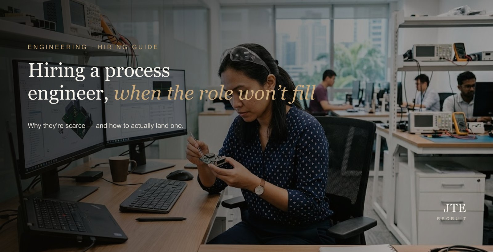
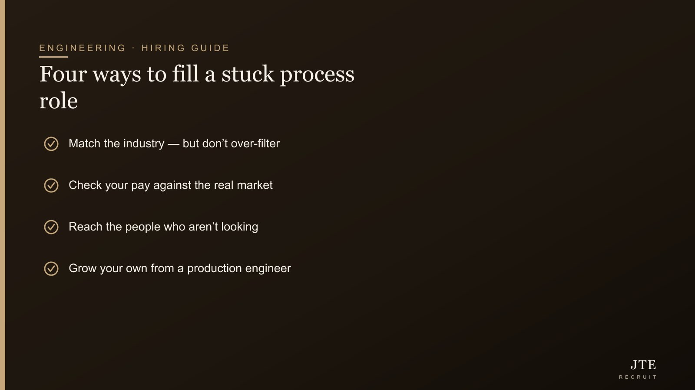
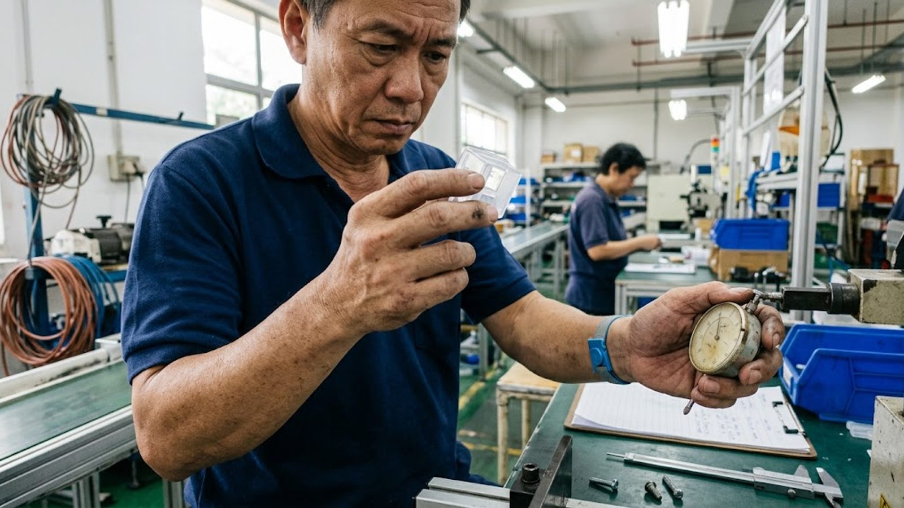

Short answer: if the role’s been open for months, it’s rarely bad luck. Good process engineers move the P&L, so bosses hold onto them tight — honestly, I would too. They’re industry-specific, and the best ones are working, delivering, and not looking. To actually fill the seat you match the industry sensibly without over-filtering, pay to the real market, reach the people who aren’t looking, or grow your own. Let me break down each one.
Of all the manufacturing roles we work on, the process engineer is the one most likely to sit open while everything else gets filled. It’s not that they’re rare in number — it’s that the market for the good ones barely has a spare-parts shelf.

What a process engineer does — and why they’re fought over
A process engineer owns the production process end to end: yield, efficiency, cost, quality and safety. When the line runs well they make it run better; when it drops they find out why and get it back; and they take a product from pilot to full-scale production, which is where a lot of manufacturers quietly stall. The impact is measurable and direct — a point of yield on a real line is money, every day — which is exactly why the strong ones rarely reach the open market.
Worth knowing before you hire: there are broadly two types, and they’re not interchangeable. Some process engineers are scale-up specialists — brilliant at standing up a new line or product and getting it into stable production. Others are optimisers — at their best squeezing more yield, speed and cost out of a mature line that’s already running. A scale-up person can be wasted (and bored) babysitting a steady line; an optimiser can struggle with the ambiguity of a brand-new process. Decide which your situation actually needs, and say so in the brief — it’s one of the quiet reasons a technically strong hire still doesn’t work out.
Why the role stays open
Three forces stack up. Demand: because they move the numbers, employers keep them and pay to keep them. Industry specificity: a semiconductor process engineer and a chemical, pharma or food one are not interchangeable, so your real pool is narrower than the job title suggests. And passivity: the best are employed and not browsing ads, so a job posting reaches only the small, least-competitive slice of the market that happens to be looking. Post an ad and wait, and you’re fishing in the emptiest part of the pond.
“If a role sits open for months, the number is often the message.”
Fix 1 — match the industry sensibly, but don’t over-filter
Industry context matters, but insisting on an exact sub-sector match shrinks an already tiny pool to almost nothing. The core discipline — yield improvement, process control, lean thinking, scale-up — transfers further than most employers assume. A strong process engineer from an adjacent industry often ramps faster than you’d expect, and widening the brief by one sensible notch can be the difference between three candidates and none.
Fix 2 — check your pay against the real market
If a role has been open for months, the number is often the message. Process engineers know their value because their employers certainly do. Benchmark against the current market before you assume it’s a supply problem — our engineering salary guide shows where you stand, and our breakdown of what a good engineer actually costs covers the full picture beyond base salary.
Fix 3 — reach the people who aren’t looking
This is the big one. The process engineer you want has a job, is delivering, and isn’t reading job ads. Reaching them — and giving them a reason to consider a move they weren’t planning — is the part an advert simply cannot do. It’s the core of what a recruiter is for, and on a role this passive it’s usually the only route that works.
Fix 4 — grow your own
If the market won’t give you a ready-made hire at a price you’ll pay, build one. A sharp production or manufacturing engineer can be developed into a process role with the right mentoring and training over time. It’s slower, but it builds loyalty and keeps the capability in-house — and some of that training and development can be part-funded by government schemes, so you may not be carrying the whole cost.

What “good” looks like — and how to check
Whichever route you take, test for the things that actually predict a strong process engineer: a concrete improvement they drove (yield up, scrap down, a line qualified faster), lean or Six Sigma applied in practice rather than just listed on a CV, and genuine comfort on the floor — the good ones live between the data and the line, not only in reports.
Consider contract for a defined push
If your need is a specific project — a new line to qualify, a yield problem to crack, a scale-up — a contract process engineer can deliver that phase without a permanent commitment, and you can convert them if it becomes ongoing. Our guide to contract vs permanent engineers covers when each fits.
The ramp-up reality: the first 90 days
Even a strong process engineer isn’t productive on day one — they need to learn your process, your equipment and your data before they can improve any of it. Budget for a genuine ramp: the first couple of months are about understanding why your line behaves the way it does, not yet changing it. Employers who expect instant yield gains tend to push too early and unsettle a good hire; those who invest in a proper ramp get a far better return over the following year. If you need faster impact than a fresh hire can give, that’s often a sign to bring in an experienced contractor for the urgent piece while a permanent hire settles in.
How to keep a process engineer once you’ve got one
Given how hard they are to hire, retention is half the battle — and the same forces that make them scarce make them poachable. Keep them with real problems to solve and the authority to solve them, visible impact (let them see the yield and cost numbers move), a path that grows their scope over time, and pay that stays honest to the market rather than quietly drifting behind it. Losing a good process engineer and re-hiring is far more expensive than paying to keep one, so treat retention as part of the hiring plan from the start, not an afterthought once they’re already halfway out the door.
The honest truth about a stuck process role
I’ll be straight with you: when a process engineer role sits open for months, nine times out of ten it’s pool or pay, not the market being cruel. It’s a slightly awkward thing to hear, because it means part of the fix is on us as employers — either the number is off, or we’re only fishing where the fish already have jobs. The good news is both are fixable, the moment you stop blaming “no talent these days” and take an honest look at the ad and the offer.
The bottom line
A stuck process role is a signal, not a dead end. Widen the industry brief by a sensible notch, check your pay against the real market, and go after the people who aren’t applying — or build one from a sharp production engineer. Do that and you stop waiting around for a unicorn who was never going to answer your ad anyway.
Frequently asked questions
What does a process engineer do?
A process engineer owns the performance of a production process — yield, efficiency, cost, quality and safety. They improve throughput, cut waste, troubleshoot when a line drops, and take products from pilot to full-scale production. In manufacturing, they’re often the single hire that most directly moves the P&L.
Why is it so hard to hire process engineers?
Because the good ones are working and getting kept (they move the numbers, so employers hold onto them), they’re industry-specific, and the best are passive — not applying anywhere. A job ad only reaches the small slice actively looking, which is why the role can sit open for months.
What’s the difference between a process, production and manufacturing engineer?
Roughly: a process engineer owns how well the process performs, a production engineer owns hitting the daily output numbers, and a manufacturing engineer owns making the design buildable. The titles overlap and are used loosely, so define the actual work rather than relying on the label.
Can a production engineer become a process engineer?
Yes — it’s a natural progression and a good way to fill a role you can’t hire directly. With mentoring and training, a strong production or manufacturing engineer can grow into a process role, and some of that development can be part-funded by government schemes.
How much does a process engineer cost in Singapore?
It varies by industry and seniority, and demand keeps rates firm because employers compete to keep them. Benchmark against the current market rather than a headline figure — our engineering salary guide keeps ranges by level, and remember on-costs like employer CPF sit on top of base salary.
Should I hire a process engineer permanent or on contract?
Permanent suits an ongoing, core process role; contract suits a defined push such as qualifying a new line or cracking a yield problem. Contract-to-perm lets you access the skill for the phase you need and convert if it becomes ongoing.
If your process role has gone quiet, it’s almost always pool or pay — and we’ll tell you honestly which. Tell us what you’re running and we’ll work the passive market to find you the right person. More on engineering recruitment at JTE.